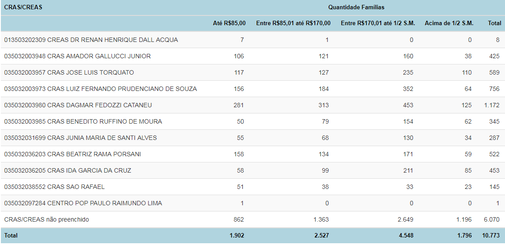
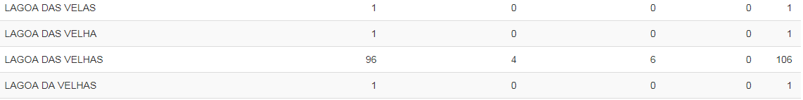

CRAS/CREAS Localidade¶
Essa funcionalidade identifica o número de famílias por CRAS/CREAS e por localidade (campo 1.11 dos formulários do Cadastro Único). É uma ferramenta muito útil para a organização das entrevistas com as famílias.
Vamos primeiro à opção CRAS/CREAS.
Essa ferramenta identifica o número de famílias por CRAS. Ela utiliza a informação do campo 3.12 do Formulário, ou seja, se o município deixar essa informação em branco, ela não vai servir para gerar o relatório por CRAS.
Você pode também identificar as famílias com os seguintes perfis nos CRAS e CREAS do seu município:
- Estado cadastral da família
- Faixa de renda familiar per capita
- Faixa de renda familiar per capita das famílias atualizadas
- Famílias em extrema probeza com/sem PBF
- Grupos Populacionais Tradicionais e específicos
- Número de famílias de indígenas cadastradas
- Número de famílias por quantidade de meses após a última atualização cadastral
- Número de famílias quilombolas cadastradas
- Quantidade de famílias beneficiárias do Programa Bolsa Família
A partir desses relatórios, é possível identificar, por exemplo, quais são os CRAS que atendem maior número de famílias em situação de extrema pobreza ou com cadastros desatualizados.
A seguir, encontra-se um relatório gerado por essa funcionalidade:
Nome da localidade
A funcionalidade Nome da Localidade funciona da mesma forma, mas como no Sistema de Cadastro Único ela é um campo aberto, ou seja, de livre digitação, quem for analisar os dados gerados deverá dar um tratamento adicional. Isso porque é comum que as pessoas escrevam o nome do mesmo bairro de diferentes formas, e somente um técnico ou gestor local será capaz de identificar quando se trata da mesma localidade ou não. Se o técnico identificar que a mesma localidade foi registrada de diferentes formas, e por isso, contada mais de uma vez, ele poderá simplesmente somar todos os valores referentes às diferentes versões do nome do bairro. No trecho abaixo é possível exemplificar esse caso:
É possível perceber, no exemplo acima, que provavelmente a localidade ‘Lagoa das Velhas’ foi escrita de cinco formas diferentes. O técnico que for analisar esse relatório deverá juntar os valores referentes a cada uma das versões do nome da localidade, somar os valores de todas elas para encontrar o total de famílias cadastradas que moram nessa localidade.